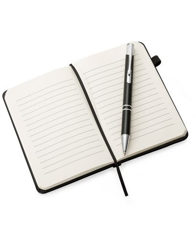

Caderno

O caderno de anotações é um item tradicional e eficaz para registrar informações, ideias e compromissos. Disponível em diversos tamanhos e estilos, pode ser pautado,
liso ou pontilhado, atendendo às preferências pessoais.
No trabalho, é útil para reuniões, planejamento de projetos e organização de tarefas. A Caderneta Anotação Pautada com Elástico 21x14cm é uma opção prática e
portátil para o dia a dia.
Compra